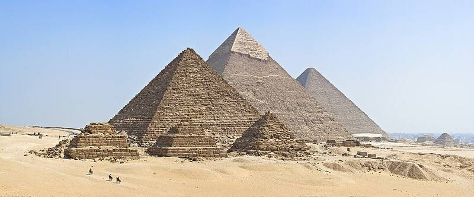

Pyramids of Giza and the Sphinx
Giza, Egypt, about 2600 to 2500 BC

The Great Pyramid of Khufu, the pyramids of Khafre and Menkaure, and the Great Sphinx. Archaeologists have found the workers' town, bakeries, tombs of the builders, and a logbook from one of the crews that hauled the limestone, all pointing to Egyptian builders. Ancient-astronaut writers have long claimed otherwise, but no evidence supports that. 1
Open in the interactive Watcher
Related
- Aliens built or helped build ancient monuments Claim
- Graham Hancock Person
- Erich von Däniken Person
Sources
- Giza pyramid complex Wikipedia